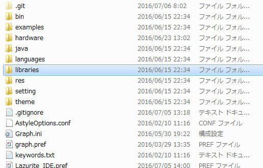
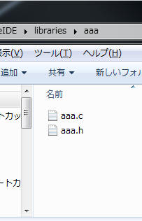
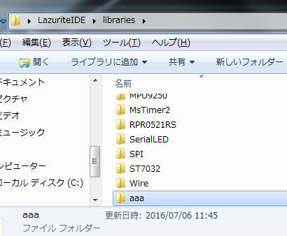
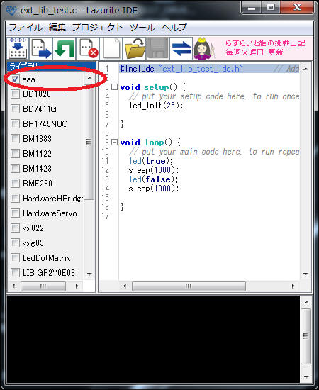

1. LazuriteIDEのフォルダの中身はこのようになっています。
デフォルトでは、c:\LazuriteIDEです。

2. 共通的に使用する関数は、librariesのフォルダに保存すれば共通関数として利用することが出来ます。そのlibrariesに保存するファイルの規則は次の通りです。
フォルダ名
+-- ソースファイル
+-- ヘッダファイル
+--キーワードファイル
この時、フォルダ名、ソースファイル名、ヘッダファイル名は同じにする必要があります。
たとえば、フォルダ名はAAAとすると、ソースファイルはAAA.C、ヘッダファイルはAAA.hにする必要があります。

ファイルの中身はこちらからダウンロードしてください。
3. LazuriteIDEのlibrariesフォルダに"aaa"のフォルダを移動します。

4. LazuriteIDEを起動します。右側の欄にライブラリ名が表示されますので、それをチェックします。

これで完成です。
5. 豆知識
ヘッダファイルはこのような内容になっています。
#ifndef _AAA_H_
// <==この行
#define _AAA_H_
// <==この行
extern void led_init(unsigned char pin);
extern void led(bool on);
#endif // _AAA_H_
// <==この行
ヘッダファイルの赤字の行は(先頭の2行と最後の1行)は、「1回しかビルドしないでください」という意味があります。externによる外部関数の宣言だけであれば問題ないのですが、typedefなどを変数名の指定を行い、2個所からヘッダファイルを読み出すと名前がダブっているというエラーが発生することがあります。これらの記述があると問題が発生しなくなります。
LazuriteIDEは、ユーザ自身で所有している環境のソフトウエアをビルドすることが可能です。
Lazurite SubGHz rev2のボードを使用するとき、このボード用のビルド環境は、
hardware\lazurite_subghz2.bpf
に情報が記載されています。ファイルを開くと、次のようになっています。
以下の４行はボードの認証やプログラムの転送に使用するパラメータなので変更しないでください。
MCUBOARD_NAME=LAZURITE Sub-GHz Rev2
MANUFACTURER_NAME=LAPIS
DESCRIPTION_NAME=LAZURITE Sub-GHz Rev2
CTRL_DRIVER=bin\\lazurite_ft232_ctrl.exe
OPTION_NAME=オプションの名前
LazuriteIDEの選択画面で選択できるオプションの名称になります。
変更するときは、新たな名称を付けてください。
OPTION_BUILD=ビルドファイル
ビルドするファイル、サーチするフォルダ、コンパイルオプションなどが記載されているフォルダです。
OPTION_HEADER=ソースコード用のヘッダファイル
作成するプログラムにincludeされるファイルです。
・ビルドファイルの詳細
| ＩNCPATH | ヘッダファイルを探すフォルダを指定してください |
| PRJSRC | ビルドするソースファイルを指定してください |
| CMPOPT | CCU8用のオプションです。詳細は、「LazuriteIDE\bin\U8Dev\Doc」を参照してください。 |
| ASMOPT | RASU8用のオプションです。詳細は、「LazuriteIDE\bin\U8Dev\Doc」を参照してください。 |
| LNKOPT | RLU8用のオプションです。詳細は、「LazuriteIDE\bin\U8Dev\Doc」を参照してください。 |